Hardware
by Spencer Tiberi
Binary
- We use computers everyday
- Inside a computer are “0s and 1s”
- Computers use the binary number system to represent info
- How do computers represent info with just binary?
- Computers use the binary number system to represent info
- Consider the decimal number (what we human typically use) 123
- The rightmost column is the 1s column
- The middle, the 10s
-
The leftmost, the 100s
100 10 1 1 2 3 - Thus we have 100 x 1 + 10 x 2 + 1 x 3 = 100 + 20 + 3 = 123
- Inside a computer, the binary 000 would represent 0, just like in our human 世界!
- However, in this case we are dealing with binary so:
- The right most column is the 1s place
- The middle, the 2s
- The leftmost, the 4s
4 2 1 0 0 0 - In the human 世界 (decimal) we use powers of 10 for place values
- 100 = 1, 101 = 10, 102 = 100, 103 = 1000, etc.
- In the computer 世界 (binary) we use powers of 2 for place values
- 20 = 1, 21 = 2, 22 = 4, 23 = 8, etc.
- The difference between decimal numbers and binary numbers is changing the base
- For the binary number 000, we have 4 x 0 + 2 x 0 + 1 x 0 = 0 + 0 + 0 = 0!
- However, in this case we are dealing with binary so:
-
Consider the binary number 001:
4 2 1 0 0 0 - We have 4 x 0 + 2 x 0 + 1 x 1 = 0 + 0 + 1 = 1
- How do we represent the decimal number 2 in binary?
- We don’t need a 4, be we need a 2, and also no 1
4 2 1 0 1 0 - This gives us 4 x 0 + 2 x 1 + 1 x 0 = 0 + 2 + 0 = 2
-
Likewise, the number 3 would be:
4 2 1 0 1 1 - As we need a 2 and a 1
- Thus, 4 x 0 + 2 x 1 + 1 x 1 = 0 + 2 + 1 = 3
-
Similarly, 4 would be:
4 2 1 1 0 0 -
What 关于 7?
4 2 1 1 1 1 - Which yields 4 x 1 + 2 x 1 + 1 x 1 = 4 + 2 + 1 = 7
- What 关于 8?
- We can’t count to 8 without another bit (binary digit)
- We run into this in the real 世界 too if we need a four-digit number vs a 3-digit number
- 开始 with the 1s, 10s, 100s place and add the 1000s
- Here we’ll add the 下一页 power of 2, 8
8 4 2 1 1 0 0 0 - 8 x 1 + 4 x 0 + 2 x 0 + 1 x 0 = 8
- We run into this in the real 世界 too if we need a four-digit number vs a 3-digit number
- We can’t count to 8 without another bit (binary digit)
- Even though computers only use binary, they can count as high as humans can!
- They do it with a smaller vocabulary, just 1 and 0.
- 这是 because it’s easier to represent two states in the physical 世界
- If you think of one of these bits as being a light bulb:
- 0 is off
- 1 is on
- Light bulbs just need electricity to turn on or off
- Electricity is sufficient to turn a switch on or off
- Inside a computer exists these switches called transistors
- Modern computers have billions!
- Turned off represents 0
- Turned on represents 1
- Inside a computer exists these switches called transistors
- If you think of one of these bits as being a light bulb:
- 这是 because it’s easier to represent two states in the physical 世界
- They do it with a smaller vocabulary, just 1 and 0.
- Using these transistors we can store values, store data, compute, and do everything we can with computers
- David demonstrates how transistors work using light bulbs
- So far all that we can represent is numbers
- A decision needs to be made on what pattern of 1s and 0s to represent letters, words, and paragraphs
- All computers can store is 0s and 1s
- To represent letters, we need a mapping of 0s and 1s to characters
- ASCII (American Standard Code for Information Interchange) does this
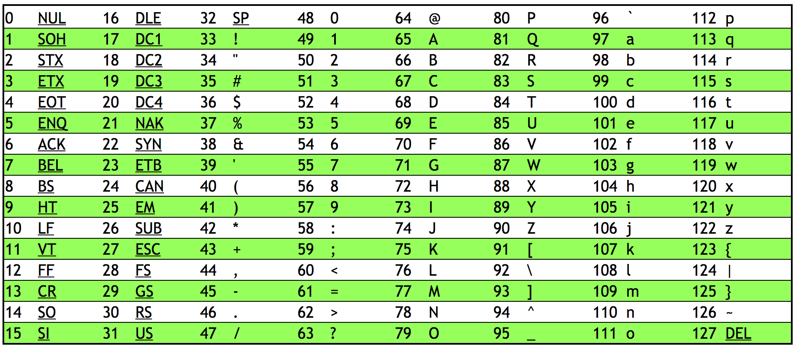
- 65 -> A, 66 -> B, 67 -> C, etc.
- 97 -> a, 98 -> b, 99 -> C, etc.
- ASCII also has mapping for punctuation symbols
- Programs like notepad, textedit, and MicroSoft Word decide weather to display patterns of bits as letters or words
- Computers only store 0s and 1s, but the programs interpret those bits in a certain way
- For 示例, if MicroSoft word sees a pattern of buts representing the number 65, it will interpret that as “A”
- Computers only store 0s and 1s, but the programs interpret those bits in a certain way
- ASCII is limited
- Original ASCII is 7 bits, thus giving 128 characters
- Extended ASCII is 8 bits, yielding 256 characters
- Many symbols are not represented
- Original ASCII is 7 bits, thus giving 128 characters
- UNICODE is a bigger set of characters that includes written languages other than English and even emoji! 😲
- All are still represented by a pattern of bits
- Consider this pattern of bits: 01001000 01001001
- 16 bits or 2 bytes (1 byte = 8 bits)
128 64 32 16 8 4 2 1 128 64 32 16 8 4 2 1 0 1 0 0 1 0 0 0 0 1 0 0 1 0 0 1 1 x 64 + 1 x 8 1 x 64 + 1 x 8 + 1 x 1 72 73 H I - Using ASCII we get the word “HI”
CPU
-
If you have heard that your computer has “Intel Inside,” it has an Intel processor in it
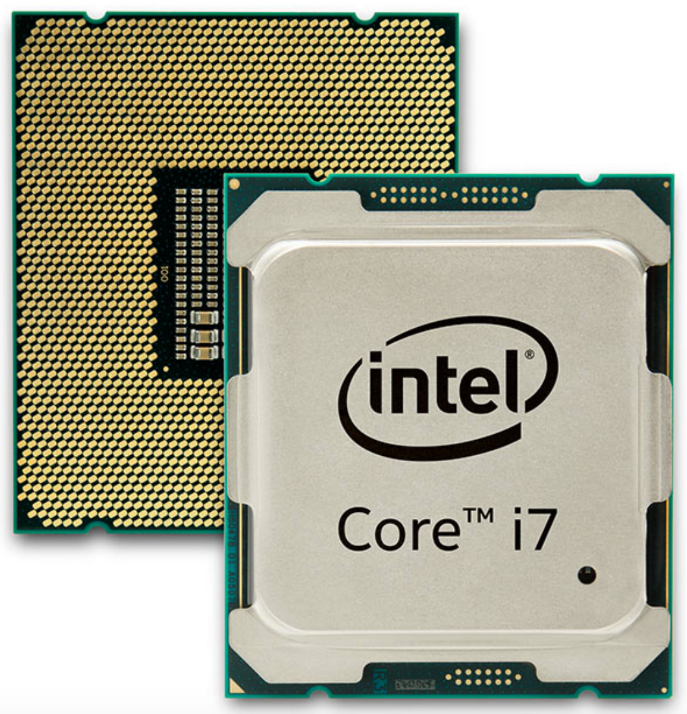
- The backside of the processor has pins that connect into the motherboard
- The motherboard is a circuit board made of silicon
- The backside of the processor has pins that connect into the motherboard
- The CPU is the brain of the computer
- Does all the thinking
- Performs math in numbers fed to it
- Helps display numbers on a screen
- Adds or deletes numbers
- CPUs now can have multiple cores
- Cores are the devices inside the CPU that can preform mathematical operations, load info from 内存, save info to 内存, etc.
- The 更多 cores, the 更多 tasks a CPU can do 在 once
- CPUs now also support hyper-threading
- Where a single core will present itself as multiple cores to a computer’s operating system
- Systems on a Chip (SoaC) are when a CPU and 更多 are all interconnected 在 once rather than attached to a motherboard
- Popular in phones, tables, and game consoles
-
Raspberry Pi
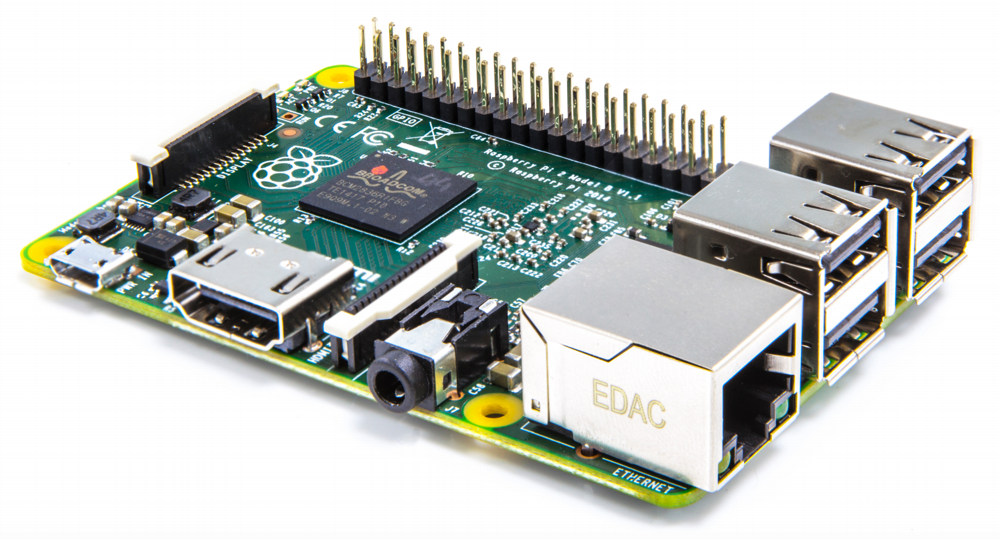
RAM (Random Access 内存)
-
Circuit board with chips that 幻灯片 into a slot on the motherboard
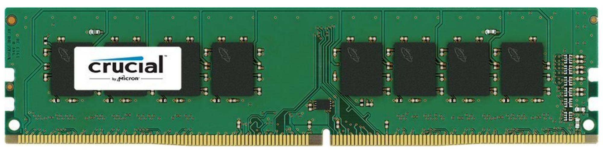
- The chips store data
- Only stores data when the power is on
- Files and programs are loaded onto these chips when ran
- Fast 内存
- The chips store data
-
You can check your RAM and other specs:
-
Windows Task Manager
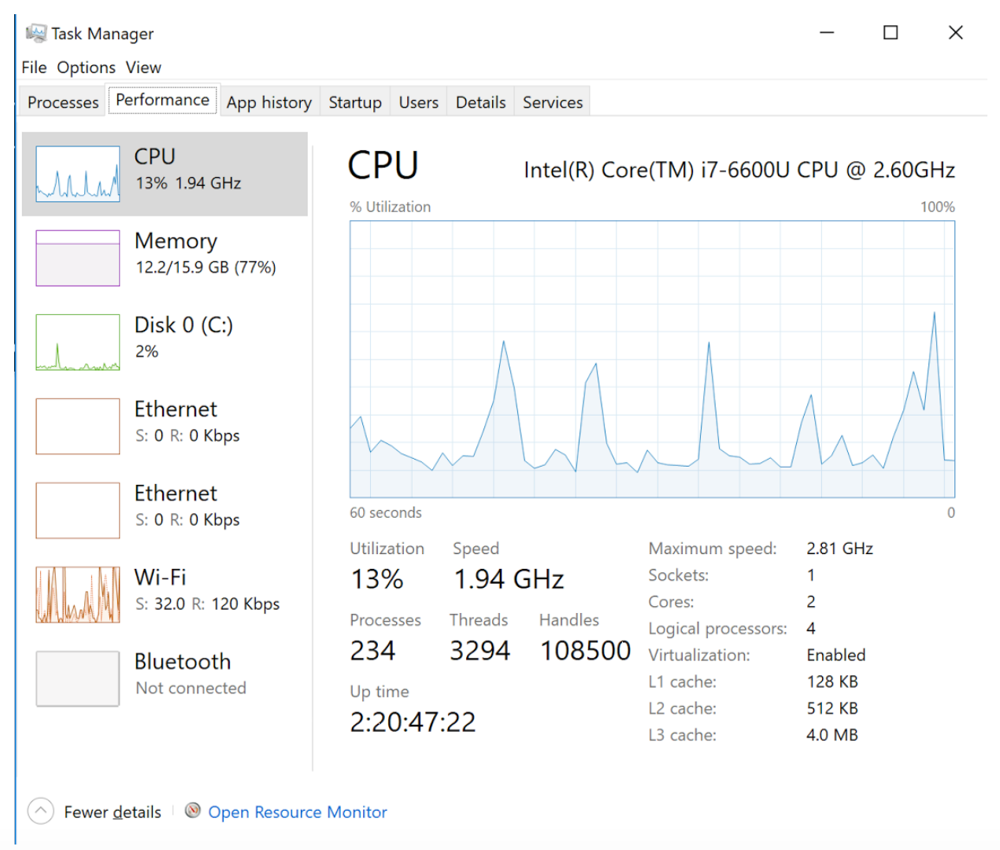
- CPU chart shows when peak usage occurs
- GHz is the number of operations a CPU can perform per second (in billions)
- 1.94 GHz = 1.94 billion operations per second
- Logical processors in this case is 4, which means both cores support hyper-threading
- Each core will do two things 在 once as if 4 cores exist
-
Mac System Profiler
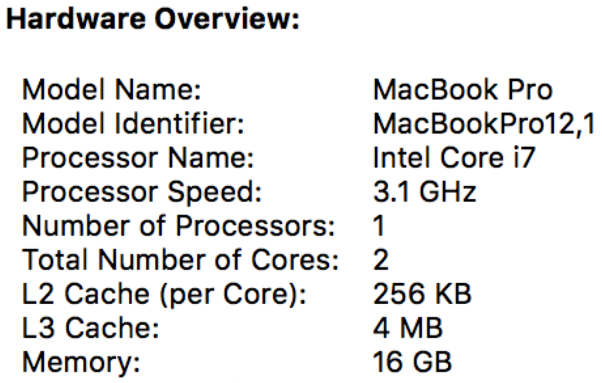
-
Hard Drives
- When you turn a computer off, you need a place to store data
-
A hard disk drive (HDD) stores this information
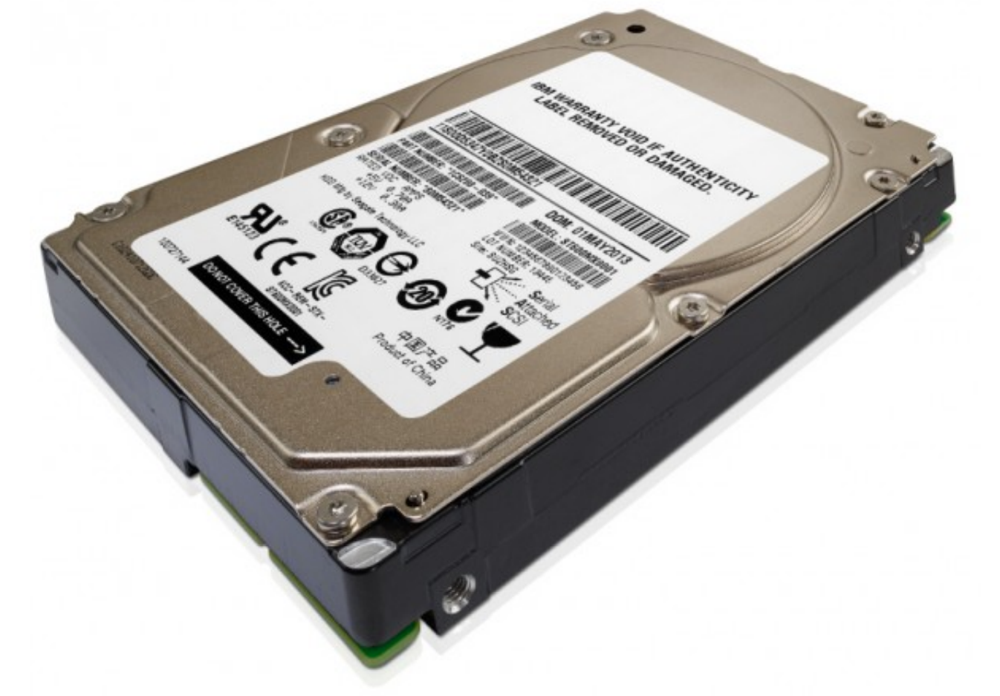
- RAM 五月 store 1 GB, 2 GB, 4 GB, through 16 GB or so
- HDD stores 256 GB, 1024 GB (AKA terabyte or TB), 2 TB
-
Inside a HDD, metal platters physically spin around
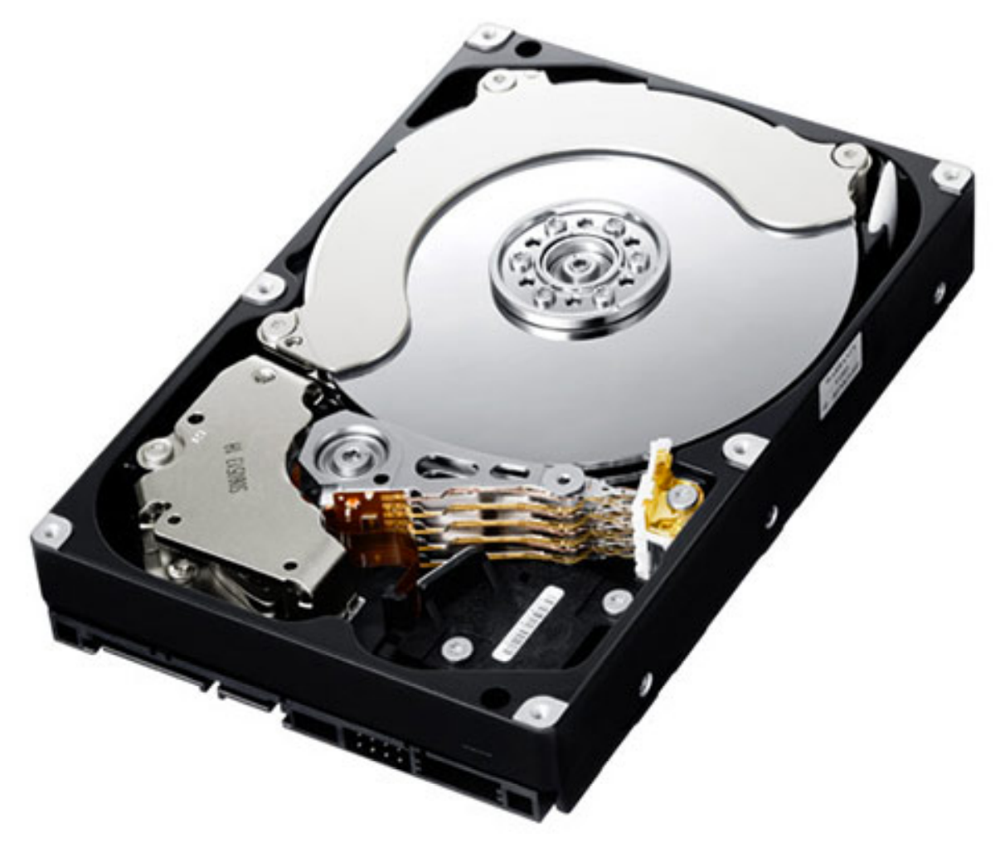
- Data is stored on these disks
- The reading heads move 返回 and forth reading data from the device
- Uses tiny magnetic particles where north pole orientation represents 1 and south pole orientation represents 0
- Power is only needed to 阅读 or change the data
- Data is preserved when power is off
- Power is only needed to 阅读 or change the data
- David shows a 视频 of a HDD running in slowmo
-
- To store data in a hard drive, RAM sends data and instructions to the HDD
- The hard drive translates that data into voltage fluctuations
- Some signals spin the platters, others move the 阅读/write heads
- Pulses sent to the 阅读/write head turn on a magnet which creates a field that changes the polarity of a tiny portion of the metal platter’s surface
- Power is sent in different directions as to change polarity
- To 阅读, the particles on the disk use their charge to move the 阅读/write head.
- Pieces of a file can be spread out around the platters
- A special file keeps track of data’s 地点
- Anytime you have a physical device that moves over a period of 时间, things go wrong
- Dropping a HDD can corrupt files
- Platters spin slower than how fast electrons move
- The hard drive translates that data into voltage fluctuations
Flash 内存
-
Solid state disk (SSD)
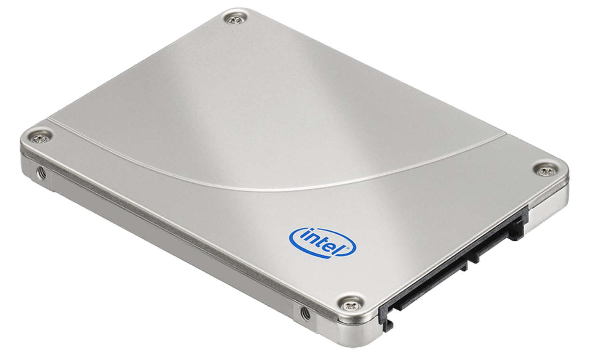
- Smaller (3.5 inch width for HDD vs 2.5 inch width for SSD)
- Still fits where 旧内容 HDDs are
- No moving particles
-
Inside, it looks a lot like RAM
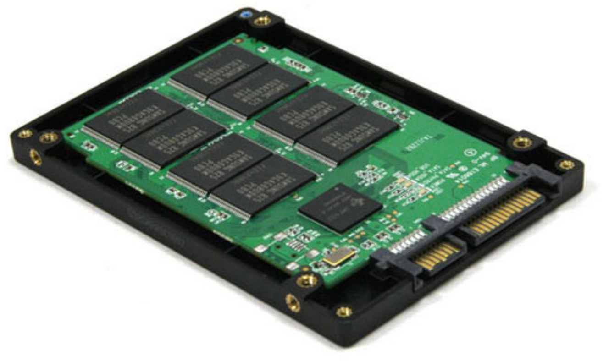
- Much faster than HDD
- Programs/files load and save 更多 quickly
- SSD theoretically don’t last as long as HDD
- Finite number of writes
- Smaller (3.5 inch width for HDD vs 2.5 inch width for SSD)
- Hybrid Drives
- Some GB of solid state 内存 and 更多 GB or TB of HDD space
- Stores as much of frequently-needed data on the SSD
- Stores 较少 frequently-needed data on HDD
- Flash 内存 also exists in the form of USB sticks
- Might store 1 GB, 16 GB, or 更多
- Portable
- External SSDs exist for 更多 storage
- Might store 256 GB or 更多
- Can be used to share data with others without network usage
- Can also have external HDD
Types of 内存 and Funneling
-
There is a tradeoff between space, money, and speed of data transfer
- Data is pushed “down the funnel” to your CPU
-
From the hard drive, data first goes to the RAM
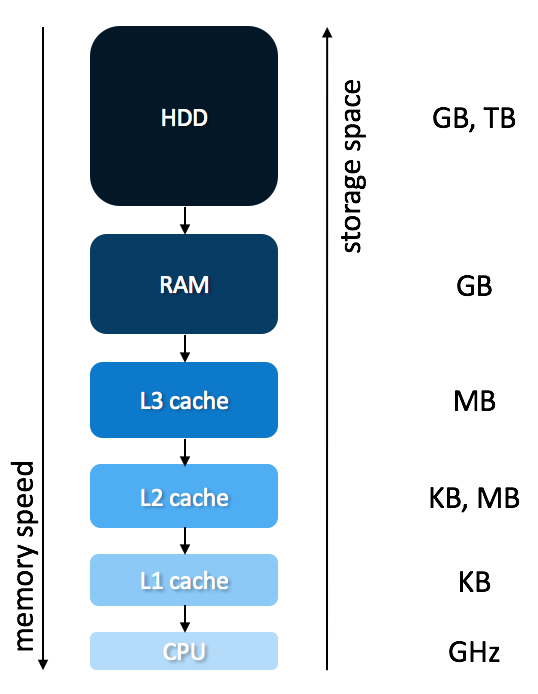
- Theoretically, the CPU never has to wait for data to crunch
- There is a tiny amount of 内存 (bytes) called registers where numbers are stored for operations.
- 内存 在 the bottom is 更多 expensive
- Disk is important for the long-term storage
- RAM is important as it stores programs you use simultaneously
- L3, L2, L1 cache are on the motherboard
-
- Data is pushed “down the funnel” to your CPU
- As an analogy for 内存, picture a candy store
- A customer approaches the counter and requests candy
- The shop owner then leaves the counter to grab the candy before returning moments later
- Not super efficient to walk all the way to the store room to grab candy
- Better to have a cache of 内存
- Not super efficient to walk all the way to the store room to grab candy
- Instead, the shop owner leaves the counter to ready a cache of candy before the customers arrive
- When a customer comes, the candy can be distributed quickly
- Cache 内存 similarly helps the CPU in this manner
- We can see sizes of cache looking 在 computer specs like before
Display Connectors
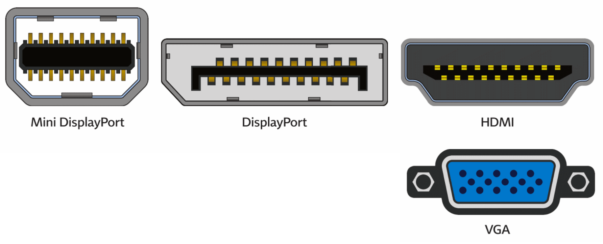
- These sockets all connect to monitors or displays
- Mini DisplayPort are used form monitors
- HDMI is not only on laptops and computers but also TVs
- VGA is older, but still commonly uses on projectors
USB (Universal Serial Bus)
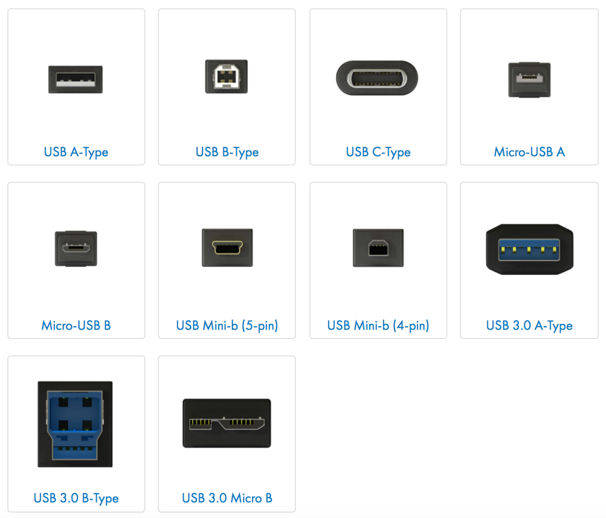
- Can plug in a whole range of peripheral devices including printers, keyboards, mice, scanners, etc.
- USB-A most common
- USB-B is often used for printers and scanners
- USB-C is newer and can be plugged in coming from different directions
- Other variants often exist for phones
- Older USB connections are slower when transferring data
- Hard drives can connect via USB
- Even if a hard drive is fast, if the USB is slow, the transfer of data will be slow
- Hard drives can connect via USB
Wireless
- Wifi is wireless 互联网
- Bluetooth allows devices such as wireless keyboards and headphones to connect to your computer
- Limited range
- 这是 ok as it is used for you to connect to your own device
- Limited range
Operating System (OS)
- Software that ensures all devices work and can intercommunicate
- MacOS and Windows are popular OS
- Can be installed by the user, but is typically done so by a manufacturer
- Installed on HDD or SDD so that it exists persistently without power
- When you hit power on your computer, the OS is loaded into RAM
- Gives you the graphical interface that you see
- Knows how to:
- Talk to your keyboard and mouse
- Display info on the screen
- Move things around in 内存
- 这是 all thanks to device drivers installed with the OS
- Special software designed to talk to certain model of printer, camera, scanner, etc.
- When an OS doesn’t recognize a device, perhaps because it’s too 新内容, you can 下载 新内容 device drives from the device manufacturer
- Teaches Window, MacOS, or Linux 关于 that 新内容 hardware
- Future-proofing structure
- It’s this intersection of hardware and software that makes computers powerful!
Looking Underneath the Hood
- David and Colton Ogden look 在 the exterior of an 旧内容 ThinkPad computer, examining ports
- Power bricks convert power from the wall into safe amounts for the computer
- David and Colton examine the inside of an 旧内容 window desktop, highlighting the motherboard, heatsink, RAM, Hard Drive, etc.
- David and Colton then look inside a HDD
- Once exposed to air and dust, it’s no longer reliable enough to use
- David and Colton then look 在 a motherboard examining all the ports on it